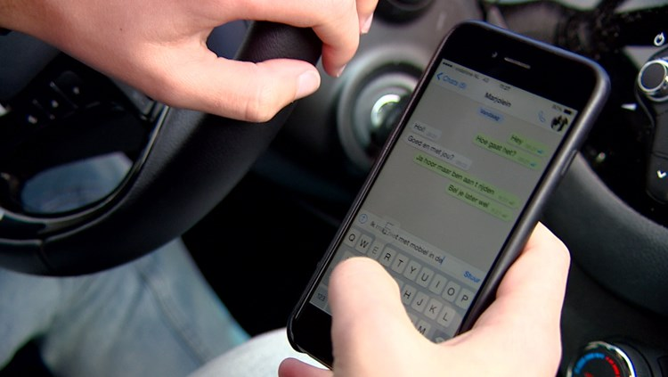

Schultz heeft genoeg van appende automobilist
Minister Schultz zint op maatregelen om te voorkomen dat een automobilist onder het rijden kan appen of sms'en. De minister vraagt telecombedrijven een techniek te ontwikkelen die de telefoon tijdens de rit compleet 'overneemt'. In een interview met het Algemeen Dagblad toont de minister van Infrastructuur en Milieu zich bezorgd over het gevaar van het gebruik van de smartphone in de auto. Het is nu al verboden rijdend een mobieltje vast te houden, maar als het apparaat in een telefoonhouder zit gelden er geen beperkingen. "Dat is een groot probleem: als je een paar seconden op je toestel kijkt, ben je zo een paar voetbalvelden verder met je auto", zegt Schultz.